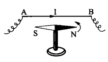

同号磁极相互排斥、异号磁极相互吸引.
地球是一个巨大的磁体，其N极位于地理南极附近、S极位于地理北极附近.
导线AB沿南北方向放置，下方有一可在水平面内自由转动的磁针.

导线中无电流通过时，磁针在地球磁场的作用下沿南北取向.
导线中通过电流时，磁针发生偏转：
电流方向由A指向B时，俯视磁针逆时针偏转.
电流方向由B指向A时，俯视磁针顺时针偏转.
电流可以对磁铁施加作用力.
组成磁铁的最小单元（磁分子）就是环形电流，这样一些分子环流定向排列，在宏观上就会显示出N、S极.
原子是由带正电的原子核与绕核旋转的负电子组成的.
电子不仅绕核旋转，还有自旋.
原子、分子等微观粒子内电子的这些运动形成了“分子环流”，这就是物质磁性的来源.
安培分子环流假说并非完全准确，但物质的磁性确实来源于电子的“运动”，确切来说，是电子的两种量子行为.
电流之间的相互作用规律.
安培定律是磁场的基本规律.
设\(\mathrm{d}\mathbf{F}_{12}\)为电流元1给电流元2的力，\(I_1\)与\(I_2\)分别为它们的电流强度，\(\mathrm{d}l_1\)与\(\mathrm{d}l_2\)分别为两线元的长度，\(r_{12}\)为两电流元之间的距离.
则\(\mathrm{d}\mathbf{F}_{12}\)的大小\(\mathrm{d}F_{12}\)满足：
$$\mathrm{d}F_{12} \propto \frac{I_1 I_2\mathrm{d}l_1\mathrm{d}l_2}{r_{12}^2}$$